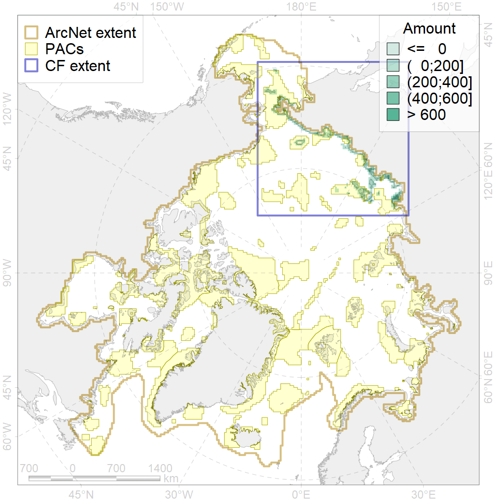
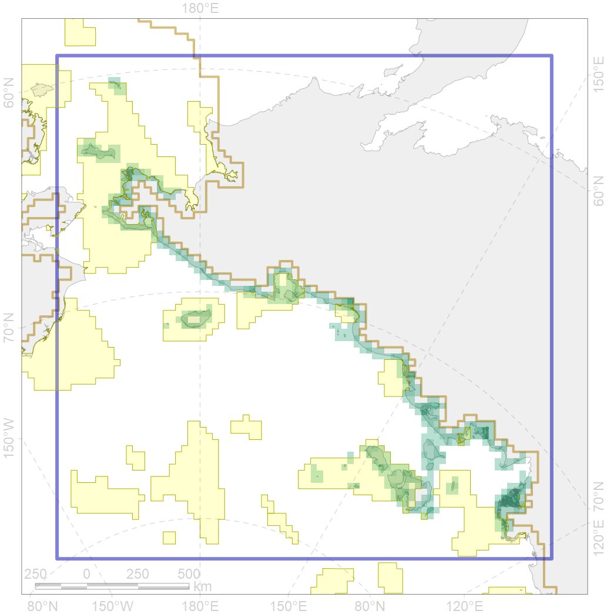

6011

| CF code | 6011 |
| CF name | Brent goose (Branta_bernicla_nigricans) Asian breeding&moulting grounds |
| Time Period | 2013 |
| Source(s) | Syroechkovski et al 1998, https://commons.wikimedia.org/wiki/File:Branta_bernicla_map.png |
| Seasonality | May-September |
| Depth Horizon | ≥0 m |
| Methodology | Field Data |
| Use Restrictions | Open source |
| Author Name | Gavrilo, Tertitski |
| Notes | |
| Scenario’s Target | 0.18 |
| Target Achievement | 0.489 (Scenario: 271.6%) |
| PAC | Share of the Total Amount within the PAC | Share of the Target Achievement for the ArcNet | PAC’s Contribution to the Target Achievement |
|---|---|---|---|
| 5 | 12.5%18.5% | 69.0%101.8% | 25.4%37.5% |
| 6 | 0.0%0.6% | 0.0%3.1% | 0.0%1.1% |
| 7 | 3.6% | 19.8% | 7.3% |
| 8 | 4.8%4.9% | 24.0%24.4% | 8.9%9.0% |
| 9 | 1.7%2.3% | 6.0%6.7% | 2.2%2.5% |
| 10 | 1.4%1.8% | 6.7%8.3% | 2.5%3.1% |
| 11 | 11.5%11.5% | 63.0%63.0% | 23.2%23.2% |
| 12 | 4.5%5.5% | 22.6%28.0% | 8.3%10.3% |
| inner | 39.9%48.6% | 211.2%255.1% | 77.8%93.9% |
| outer | 60.1%83.0% | 60.4%172.0% | 22.2%63.3% |
| † supplement values are for area consistence whereas principal values are for Accenter compatible gridded stats |
{kind=link}